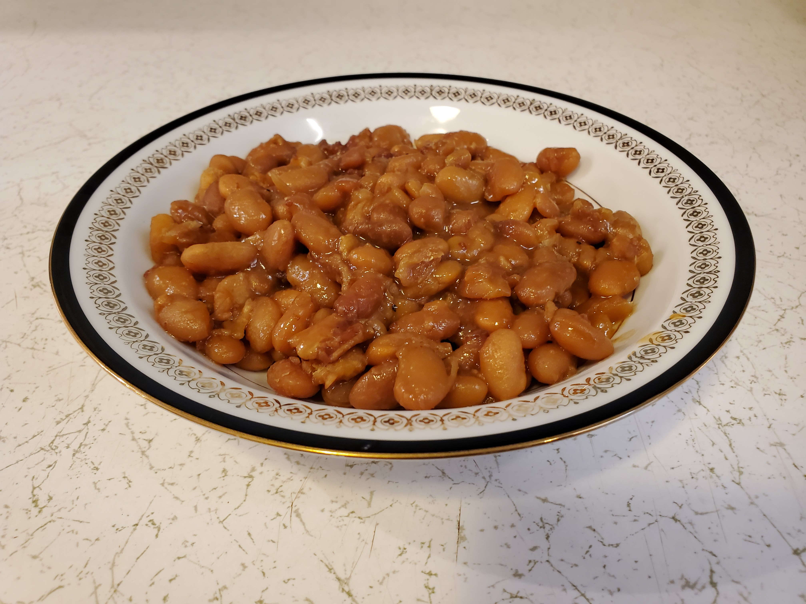

This is a recipe for "Hazel's Baked Beans"
Ingredients
- 2 lb. of Food Lion Great Norhtern Beans.
- 2 cups of Food Lion Dark Brown Sugar.
- 1/4 cup + a little of Brer Rabbit Full Flavor Molasses unsulphured.
- 2 tsp. of salt.
- 1/4 tsp. of pepper.
- 1/2 lb. of Oscar Mayer Naturally Hardwood Smoked Bacon.
Directions
- Put the beans into a Dutch oven, and cover them with about 2 inches of water. Soak the beans 4-5 hours or overnight.
- Bring to a boil, and boil for 5 minutes.
- Drain, and rinse the beans.
- Put all of the ingredients into a Dutch oven.
- Add enough water so it is level with the top of the beans, and cover with a lid.
- Preheat oven to 300°.
- Bake for 5 hours.
- Remove the lid from the Dutch oven, and bake for 1 more hour.
- Enjoy.
Download Recipe